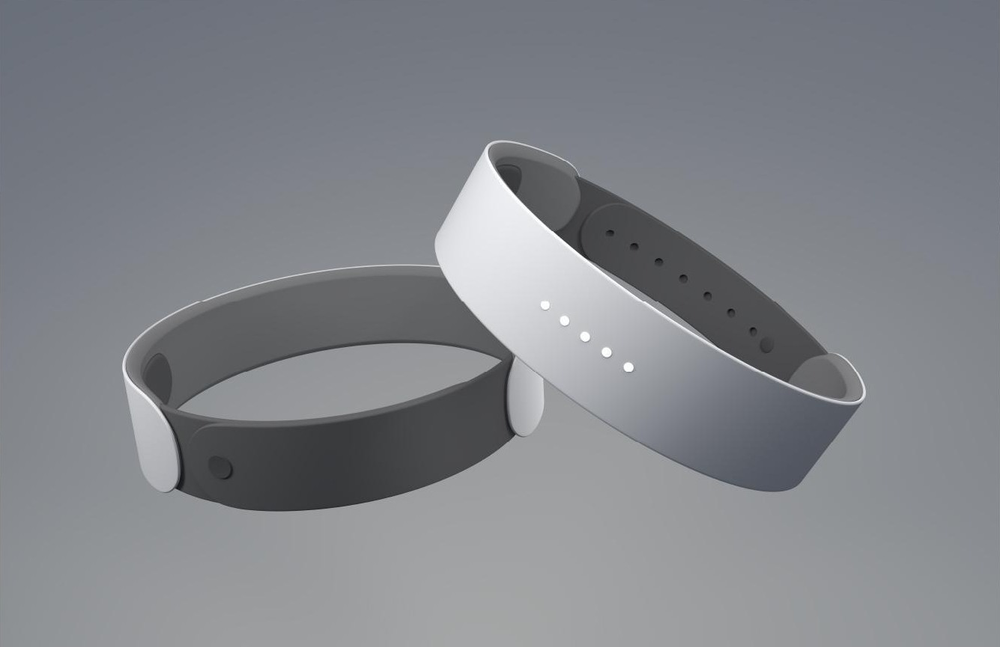

Wearable concept · 2023
Haptic Cycling Bracelet

A wearable navigation concept pairing a cycling bracelet with a mobile app. Routes are planned before a ride, while vibration patterns at the wrist communicate navigation cues along the way. The project explores how tactile feedback, a simple wearable form, and a supporting app could reduce reliance on visual prompts during cycling.